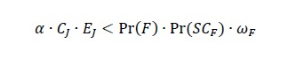

The Economics of Time Travel
This article was originally published in late 2023 in The Seeds of Science, and is available here.
Abstract
The lack of time travellers visiting us may be seen as evidence that time travel is not possible. In this article, I argue an alternative explanation is that we are not economically important enough to our descendants to justify the costs of time travel. Using a cost-benefit analysis, I elaborate on this argument. I suggest that the major cost of time travel is likely to be the energy cost, whilst the largest benefit of time travel is knowledge which the present possesses, but the future has lost. Focusing on this benefit, I argue it is extremely unlikely that we possess a piece of knowledge which is sufficiently important to a future civilisation (system critical), but also has been lost by said civilisation. This is to say, we may not have been visited by time travellers because we are not important enough.
Introduction
One experimental way to prove to feasibility of travel forwards and backwards in time (i.e., time travel) would be to stage a large, broadcasted event. The location for such an event should be temporally significant--say, Greenwich--and the advertising for the event should be substantial. By substantial, I mean significant enough to be remembered for all of human history (call this the chrono-permanency criterion). Assuming such a feat of marketing is accomplished, matters turn to the event itself. The event should be a welcoming party for our descendants. It should serve as a message that at the particular moment in history that the event takes place--perhaps New Year’s Eve, 2023?--our descendants are to send a chrononaut to make contact. If no one shows up, this suggests time travel is not possible. If someone shows up, time travel would be demonstrated.
The above experiment builds from a logical argument: that if time travel were possible, we would be awash with time travellers. As we are not, time travel is not possible. Yet, this argument assumes something quite significant: that we, or any civilisation prior to ours, are worth visiting.[1] In this article, I propose an economic cost-benefit analysis of time travel. I argue the main economic benefit which our descendants may receive via time travel is knowledge which we currently possess, but they have lost. Furthermore, this knowledge must be sufficiently critical to our descendants to justify the costs of time travel, which are likely to be dominated by energy costs. I posit that even assuming the energy requirements for time travel are met by a human civilisation in the future, it is highly unlikely that that same civilisation will come to depend on a piece of knowledge which we currently possess, but they have lost and cannot rediscover by other means. In other words, I argue that even assuming time travel is possible, our epoch is unlikely to offer any economic benefit to a future, time travelling civilisation.
The Economics of Time Travel to Date
Various economic perspectives on time travel have been proposed. A notable flurry of commentary, albeit tongue-in-cheek, began in 2006 as Tyler Cowen (2006) began musing on the economics of relativity, drawing on Krugman’s (2010 [1978]) Theory of Interstellar Trade (also see Cowen, 2008a).[2] Cowen (2008a, 2008b) and others (Gans, 2008; Morehouse, 2012; Whitman, 2008) would build on these ideas further to incorporate labour within ‘transtemporal markets.’ The basic argument of these perspectives is that future epochs would be incentivised to use time travel to exploit the cheaper labour of the past, select epoch-specific legal structures which were beneficial for business, and embrace arbitrage opportunities for resources across time-periods. Gans (2008) is an exception insofar as they are critical of these arguments, and suggest that the clear, overwhelming economic advantage for a time traveller comes from using knowledge of the future to play markets of the past. Indeed, in a recent paper, Swinton (2021) argues that the stock market proves time travel to be impossible, because markets are less rational than would be expected if a flurry of actors with enhanced foresight were actively trading.
What is surprising about this literature (besides its existence) are the dual assumptions that a) time travellers would broadly operate within the same or similar economic system to that of the present; and b) that the past offers efficiencies for this economic system which the present would not. These assumptions are not wholly unjustified. For instance, if time travel were invented tomorrow, any would-be time traveller would have globalised capitalism as their framework of economic reference, and with that in mind, might indeed travel to the past to purchase Apple shares.
But if time travel is invented many years from now, be it centuries or millennia, there is no compelling reason to believe a time traveller of, say, the 41st millennium would behave, economically, like an agent from the 21st century. Globalised capitalism is around 100 years’ old; industrial capitalism perhaps 200; and proto-liberal capitalism maybe only 300 to 400 (Wood, 1999). Human societies have, historically, demonstrated substantial capacity to change in (relatively) little time (Graeber and Wengrow, 2021). I will return to this broad criticism at the end of this article. Furthermore, none of the economic benefits of time travel offered in this literature are exclusive benefits of time travel. The notion of cheaper labour, arbitrage opportunities, or legal opportunities are really all advantages of expansion of the economic domain, much in the same way that colonial expansion, or the expansion of credit and financialisation, have been described (e.g., Arrighi, 2009). This is to say, for a time travelling civilisation, there is little reason to believe the advantages of trading with the past would be greater than trading with other planetary civilisations (or species).[3] Even if the arguments stand, they are not really advantages of time travel per se.
A Cost-Benefit Analysis of Time Travel
These criticisms point towards a cost-benefit analysis approach. Time travel may only occur at a historical moment when the necessary components of time travel technology can be assembled. This is to say, only a civilisation that can support the costs of time travel could become time travellers. Furthermore, such a civilisation would only accept these costs for benefits which must be achieved through time travel, and not through alternative means, unless the alternative means were costlier than time travel (which, I would argue, largely depends on the nature of time travel technology itself).
Whilst one may consider a plethora of social and ethical costs associated with time travel, such as the grandfather paradox or post-colonial critiques applied trans-temporally, I argue the overwhelming economic cost of time travel is the energy cost. As others have acknowledged (Cowen, 2008a, 2006; Krugman, 2010 [1978]), near luminal or superluminal travel produces sufficient relativistic effects as to constitute time travel, at least into the future (relative to the slower observer). Achieving such speeds requires a tremendous amount of energy--for superluminal travel, an infinite amount of energy, based on our current understanding.[4] Black holes--infamous galactic objects which warp spacetime--are formed by the deaths of the most massive of stars. These events involve enormous amounts of energy. Whilst physics has much less to say about the mechanisms for travelling backwards in time,[5] taking forward time travel as a rough guide, it is likely—should it be possible—that the primary constraining factor will also be energy.[6] I take notion of warping spacetime and superluminal travel as guides to time travel technology, and not as a presumptive means of time travelling. This is to say, because various theoretical ideas of time travel imply huge amounts of energy would be required, I am assuming a similar amount of energy would be required for time travel by any means.[7]
Energy is also an ideal variable to consider when speculating on the likely stage of civilisational development necessary for time travel. The Kardashev scale, developed by Nikolai Kardashev (1964) measures the development of (inter)planetary civilisations based on the amount of energy they are able to capture. A Type I civilisation is able to harness all the energy of its home star which reaches its planet. A Type II civilisation can capture all the energy of its home star, through innovations such as a Dyson Sphere (Dyson, 1960). A Type III civilisation can capture all the energy of its home galaxy. Current estimates suggest Earth has a Kardashev value of approximately 0.73, based on 2021 energy consumption figures (BP Statistic Review of World Energy, 2021).[8] Carl Sagan adapted Kardashev’s ‘Types’ into a continuous scale, which is where this non-integer value comes from. Doing so in 1971, Sagan then estimated Earth’s Kardashev value at 0.70, implying human civilisation may reach Type I in around 500 years, assuming linear growth in energy consumption. Given the likely energy demands required for, say, the time-distorting effects of a black hole, time travel is unlikely to be achieved in the next few centuries without a historically monumental increase in energy production.
Turning to the question of benefits, I argue time travel is unlikely to be pursued unless the resource gained through the activity is extremely scarce or difficult to acquire in a future period, but is relatively less scarce (or even abundant) in a previous period. Again, given any time travelling civilisation has likely secured dominion over at least its home star, if not a sizeable proportion of its home galaxy, the notion that such scarce resources would be labour or raw materials seems unfounded. On a galactic scale, raw materials are likely to be abundant, especially given the incomprehensible energy resources available to a time travelling civilisation. Such resources could likely support substantially more labour, meaning labour is unlikely to be scarce either. Instead, the most feasible resource which one may consider abundant today, but scarce in the (far) future, is today’s knowledge.
By ‘today’s knowledge,’ I mean everything which is known, by at least someone or something, today. Whilst this definition is necessarily broad, I will generally focus on knowledge of processes (e.g., programming knowledge, manufacturing knowledge). This is because, given the likely large energy costs, knowledge in the sense of historic knowledge, or whatever might be gleamed through ‘chrono-tourism,’ is unlikely to be sufficiently important to a future society to warrant the use of time travel, at least economically speaking. Whilst I consider ‘today’s knowledge’ to encompass everything which is known today, I will generally focus on ‘system critical’ (SC) knowledge. By this, I mean knowledge which is irreplaceable within systems the future civilisation relies upon for maintaining its way of life. I focus on this type of knowledge for two reasons. Firstly, such SC knowledge is the only subset of ‘today’s knowledge’ which may overcome the likely immense energy costs of time travel, in terms of economic benefit. Secondly, because the recent examples of knowledge loss which exist tend to be SC knowledge.
Knowledge is always being lost. History provides a plethora of examples, such as Greek fire and Roman concrete. Several foundational principles of calculus have been found in works attributable to Archimedes, but which--for one reason or another--were lost for centuries (Flood, 2011). Newton’s work on gravity itself owes much to an almost lost set of astronomical observations made by Jeremiah Horrocks, whose early death meant the observations were only (and luckily) published as an appendix in someone else’s book (Ferguson, 2023). In past decades, one example of SC knowledge which was lost is fogbank, a highly classified ‘ingredient’ within the manufacturing process of the United States’ nuclear warheads. Fogbank was so classified, in fact, that no records of the production process were made, with all individuals formerly familiar with the process either dead, or unable to remember. It took US nuclear engineers over a decade to rediscover how to make fogbank (Lillard, 2009).
The idea that advanced civilisations could come to be reliant on knowledge that they no longer have knowledge of may seem silly, but it is both a complete possibility, and indeed, somewhat evidenced in our own society. Complex systems and processes almost never start off complex. Rather, complexity is almost always the result of additional processes being ‘tacked onto’ existing, simple processes (Frey, 2020). This is common in programming--a simple website may be further developed over time, with more code written to facilitate more features. As computers came to be adopted within the finance industry in the 1960s and 70s, foundational software was written in older programming languages to facilitate basic banking services. Finance, being a SC sector within our civilisation, broadly took the ‘if it ain’t broken, don’t fix it,’ approach to this foundational code, almost never rewriting, updating, or otherwise tweaking the code, but instead, tacking on new code to perform new services. This approach is somewhat understandable. Firstly, when launching a completely new version of a complex system, there is a substantial risk that something does not work, and that spectacular errors arise. Secondly, the costs of updating the whole system rarely outweigh the immediate benefits, meaning cost-constrained organisations, such as banks, may always find incentive to forestall major updates.
Of course, the fragility of old systems supporting new systems is not necessarily a problem if knowledge of the old system remains, even when a newer version would be less fragile, or otherwise better (e.g., more efficient). But as systems become more complex, individual competencies within an organisation tend to ‘specialise,’ with understanding of the whole fading from any one individual’s grasp (Beer, 1993, 1975, 1973; Braverman, 1974). As the workforce composition of an organisation changes, with new employees replacing the retiring, SC knowledge can become eroded through partial knowledge transfer and miscommunication.
It might be hard to imagine that a time travelling civilisation would find itself dependent upon today’s knowledge, and simultaneously ignorant of it. Whilst this is a core aspect of the argument I am to make; it is not wholly unheard of within time travel circles. One of the most infamous stories of time travel found online is that of John Titor, who (in 2001) claimed to be a US army soldier from the year 2036. Titor’s supposed mission was to retrieve an IBM 5100 computer from the 1970s, as various critical systems in 2036 used legacy software which was going to break, less compatible technology was acquired to fix the problem (Dodds, 2015). Whilst likely a fanciful tale concocted for an internet forum, the key premise is telling: time travel may occur when future civilisations lose access to SC knowledge.
The Inequality of Time Travel
Cost-benefit calculations are limited in all manner of ways. For instance, one may overestimate some variable within the analysis, or omit a variable entirely. It is my ambition with the arguments above, and the inequality below, to highlight worthwhile aspects of a cost-benefit analysis of time travel, rather than incorporate all possible considerations (of which there are too many).[9] Equation (1) presents the basic inequality:
Equation (1)

In Equation (1), CJ is the money cost of one Joule of energy, and EJ is the amount of energy, measured in Joules, required for time travel. The left side of the inequality thus captures the energy costs of time travel. On the right side, Pr(F) is the probability that knowledge F is lost; Pr(SCF) is the probability that knowledge F is system critical; and ùúîF is the money benefit of rediscovering knowledge F. A time-travelling civilisation is expected to time travel from time t+n to time t only when the energy costs of doing so are less than the expected payoffs of retrieving knowledge F. ùõº is a money cost deflator so the value of money on each side of the inequality is comparable. Where money costs are estimated within the same time period, ùõº may be ignored. Likewise, ùõº may appear on either side of the inequality, provided the correct adjustment to ùõº is made.[10]
For discursive purposes, what is worthwhile focusing on are the two probabilities, Pr(F) and Pr(SCF), on the right side of Equation (1). One way of modelling Pr(F) is via Equation (2):
Equation (2)
where n is the number of years since knowledge F was discovered, r is the ‘reproduction rate’ of knowledge, or broadly, the number of years within a human generation. m is the number of ‘entities’ with knowledge of knowledge F at time t, per Equation (3):
Equation (3)
where NH,F,t is the number of humans with knowledge of F at time t, and NC,F,t is the number of computers (as well as other records, such as books) with ‚Äòknowledge‚Äô of F at time t.[11] Note that Equation (2) uses the reciprocal of m, which might be understood as the ‚Äòrate of forgetting,‚Äô compared to m, which is the ‚Äòrate of remembering.‚Äô Thus, Equation (2) describes the probability of F being remembered over n years, hence why one less this is equal to Pr(ùêπ).[12]
Per Equations (2) and (3), knowledge which is very niche or esoteric is known by few people and recorded in few places. Thus, m will tend to be small, and Pr(F) will rapidly move towards 1. Inversely, where knowledge is very broad or fundamental, many people will know of it, and there will also be many records of it. Thus, m will tend to be large, and Pr(F) will very slowly move towards 1.[13]
This is important when considering Pr(SCF). By definition, Pr(SCF) concerns knowledge which is fundamental to a civilisation. As such, even though Pr(SCF) may be difficult to estimate, one can infer that when Pr(SCF) = 1, m will be very large and thus Pr(F) ‚âà 0. Equally, when Pr(F) = 1, Pr(SCF) ‚âà 0. This is to say, these two multiplicative probabilities likely have a relationship such that they counteract one another. Only in very particular instances--say, the fogbank incident where fogbank was both critical to the US nuclear arsenal but also highly classified, so few knew of it--will Pr(F)‚àôPr(SCF) ‚âà 0 not be found.[14] Therefore, even allowing ùúîF to be arbitrarily large, it is very unlikely that the conditions are met for the inequality to be satisfied.
If on the 31st of December 2023 an event is held to welcome our time travelling descendants, and no one shows up, we need not assume this is because time travel is impossible. Instead, the conditions for it to be economically beneficial for our descendants to visit us may just not be sufficient. Put less politely, we as a civilisation are unlikely to be important enough to warrant visiting.
Is the Future so Utilitarian?
As above, we cannot necessarily assume too much about the values of a future civilisation, or their political and economic arrangements. I have used this argument to critique previous economic musings on time travel. Yet, the same argument applies to this contribution. Indeed, perhaps more so. Whereas previous authors (e.g., Swinton, 2021) have generally assumed near-future time travel, I have made the case that time travel will only be possible to a civilisation in the far future, where more time has elapsed, giving way to more scope in the evolution of their socioeconomic system.
Thus, it is not necessarily reasonable to assume that a future civilisation will undertake the utilitarian calculus of a cost-benefit analysis. Indeed, much of my argument is contingent on only two civilisational developments, energy capture and time travel. Yet, in achieving these developments, others (technological, cultural, political, social, etc.) are almost certain to occur. The near-term likelihood of time travel will also certainly spark a vibrant ethical debate, which may include consideration of issues presented here. For instance, in our own epoch, climate change has led to initiatives like the Svalbard Global Seed Vault to preserve biodiversity in plant life. A civilisation which acquires time travel technology may, even before acquisition, recognise the dangers of losing knowledge and set up initiatives to preserve it, if not whole ethical systems and legislative approaches to regulate the emerging technology’s usage.
Equally, without making such an assumption, there is limited analysis which can be undertaken. Indeed, any speculation about the practices of the future must be caveated with all the problems of prediction or inference. Thus, whilst it is highly unlikely that the exact procedure outlined here will be the decision-making framework of a future civilisation, or that the philosophical basis of such a framework would hold either, it is nevertheless just as good a framework to adopt as any other for the purposes of postulation. Furthermore, the approach outlined here avoids some of the more questionable assumptions of previous authors, such as the assumptions of comparable trade arrangements or arrangements of production. By grounding the discussion only in discussions of energy costs and knowledge (information) benefits, little about, say, the economic system of the future, needs to be assumed.
As a final note, I have generally limited my analysis to questions of economic costs and benefits and have been cautious throughout this article to focus on these economic considerations, whilst offering less comment on--as above--alternative motives which may govern the development and use of time travel. One need only to ask oneself what one would do with the ability to time travel to realise that ‘acquiring lost knowledge,’ is a very niche motivation. Just as people travel the globe, and increasingly beyond, so too wanderlust is likely to extend to time travel. The prospect of visiting epochs radically different to one’s own represents an intrinsic motivation for many.[15] This analysis would likely be incomplete without an acknowledgement of this.
And, perhaps someday, economists will have to calculate the various costs and benefits of chrono-tourism, such as those of cultural exchange, and supplement the model proposed here, assuming it is at all relevant. For instance, the (relatively) recent development of the atomic bomb, space travel, and the internet, may all point to the past century or so as an especially interesting time period for a future civilisation built on these (by their standards) primitive technologies.[16] Thus, non-economic terms should be included in any cost-benefit analysis of time travel. Their omission here is wholly the result of practical limitations.
Conclusions
In this article, I argue that (accepting time travel is possible) time travellers may not have visited us because our present offers little economic benefit to them. I postulate that the major economic cost of time travel is likely to be the energy cost, and this cost is likely to be extremely large. Furthermore, I have argued the major economic benefit of time travel is likely to be today’s knowledge, and specifically, knowledge which is ‘system critical’ for a future civilisation, but which said civilisation has lost. Yet, the likelihood of knowledge being lost and for said knowledge to be system critical is extremely small. Thus, I conclude that there is only a very narrow set of circumstances where the present is a likely destination for any time traveller, economically speaking. Much like a parent or grandparent may lament that their immediate family do not visit often enough, present society may need to entertain the possibility that, from an economic perspective, our descendants do not find us especially important.